정보처리산업기사 (2011-03-20 기출문제)
1과목: 데이터 베이스
1. 분산 데이터베이스에 대한 설명으로 옳지 않은 것은?
- 데이터베이스의 설계가 쉽다.
- 분산제어가 가능하다.
- 시스템 성능이 향상된다.
- 시스템의 융통성이 증가한다.
(정답률: 77%)

2. 뷰에 대한 설명으로 옳지 않은 것은?
- 뷰 위에 또 다른 뷰를 정의 할 수 있다.
- 보안 측면에서 뷰를 활용할 수 있다.
- 뷰를 삭제할 때 그 위에 정의된 다른 뷰도 자동적으로 삭제된다.
- 뷰에 대한 삽입, 갱신, 삭제 연산은 기본 테이블과 동일하다.
(정답률: 65%)
3. 데이터 모델의 종류 중 오너-멤버(owner-member)관계를 갖는 것은?
- 관계 데이터 모델
- 계층 데이터 모델
- 뷰 데이터 모델
- 네트워크 데이터 모델
(정답률: 80%)
4. 다음 ( )에 공통 적용될 단어로 옳은 것은?
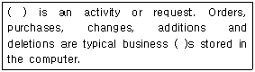
- Domain
- Cardinality
- Transaction
- Schema
(정답률: 52%)
5. 일반적인 데이터 모델의 3가지 구성요소로 옳은 것은?
- 구조, 연산, 제약조건
- 구조, 연산, 도메인
- 릴레이션, 구조, 스키마
- 데이터사전, 연산, 릴레이션
(정답률: 71%)
6. 스키마의 3계층에서 실제 데이터베이스가 기억장치 내에 저장되어 있으며 저장 스키마(storage schema)라고도 하는 것은?
- 개념 스키마
- 외부 스키마
- 내부 스키마
- 관계 스키마
(정답률: 78%)
7. 다음 문장의 ( ) 안의 내용으로 적합한 것은?
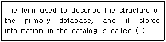
- System structure
- Operation
- Meta-data
- System architecture
(정답률: 65%)
8. DBMS에 대한 설명으로 옳지 않은 것은?
- 데이터의 중복을 최소화하여 기억공간을 절약할 수 있다.
- 다수의 사용자들이 서로 다른 목적으로 데이터를 공유하는 것이 가능하다.
- 정확한 최신 정보의 이용이 가능하고 무결성이 유지된다.
- 시스템이 간단해지고 파일의 예비와 복구가 쉽다.
(정답률: 75%)
9. 병행수행의 문제점 중 하나의 트랜잭션 수행이 실패한 후 회복되기 전에 다른 트랜잭션이 실패한 갱신 결과를 참조하는 현상은?
- uncommitted dependency
- lost update
- inconsistency
- cascading rollback
(정답률: 62%)
10. 하나의 릴레이션에 존재하는 후보 키들 중에서 기본 키를 제외한 나머지 후보 키들을 의미하는 것은?
- 대체키
- 외래키
- 유일키
- 최소키
(정답률: 72%)
11. 부분 함수 종속 제거가 이루어지는 정규화 단계는?
- 1NF → 2NF
- 2NF → 3NF
- 3NF → BCNF
- BCNF → 4NF
(정답률: 73%)
12. 다음 트리를 Post-order로 운행한 결과는?
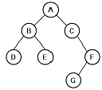
- ABDECFG
- DBEACGF
- ABCDEFG
- DEBGFCA
(정답률: 65%)
13. 트랜잭션의 특성 중 “all or nothing", 즉 트랜잭션의 연산은 데이터베이스에 모두 반영되든지 아니면 전혀 반영되지 않아야 함을 의미하는 것은?
- atomicity
- consistency
- isolation
- durability
(정답률: 64%)
14. 다음 그림에서 트리의 차수(Degree of a Tree)는?
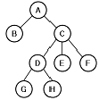
- 1
- 2
- 3
- 4
(정답률: 78%)
15. 논리적 설계 단계에 해당하지 않는 것은?
- 논리적 데이터 모델로 변환
- 트랜잭션 인터페이스 설계
- 스키마의 평가 및 정제
- 접근 경로 설계
(정답률: 57%)
16. 데이터베이스의 특성 중 다음 설명에 해당하는 것은?
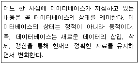
- continuous evolution
- time accessibility
- concurrent sharing
- content reference
(정답률: 66%)
17. 다음 자료에 대하여 버블 정렬을 이용하여 오름차순 정렬을 할 경우 1pass 후의 결과는?
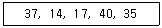
- 14 17 37 35 40
- 14 37 17 40 35
- 35 37 14 17 40
- 37 14 17 35 40
(정답률: 63%)
18. 다음과 같은 응용 분야에 가장 적합한 자료 구조는?
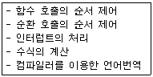
- 스택
- 큐
- 데크
- 트리
(정답률: 75%)
19. SQL의 DDL에 해당하지 않는 것은?
- CREATE
- ALTER
- DROP
- SELECT
(정답률: 79%)
20. 다음 자료 구조 중 성격이 나머지 셋과 다른 하나는?
- 스택
- 큐
- 데크
- 트리
(정답률: 84%)
2과목: 전자 계산기 구조
21. 정보 코드의 에러 교정 방식에서 우수 패리티(even parity)를 사용하여 BCD수 1001에 대한 단일 에러 교정 코드를 결정한 것 중 알맞은 것은?
- 10010
- 01001
- 0011001
- 1100110
(정답률: 40%)
22. 다음 중 CICS(Complex Instruction Set Computer)형 프로세서의 특징이 아닌 것은?
- 명령어의 길이가 일정하다.
- 많은 수의 명령어를 갖는다.
- 다양한 addressing mode를 지원한다.
- 레지스터와 메모리의 다양한 명령어를 제공한다.
(정답률: 70%)
23. 어느 인스트럭션의 수행 속도를 반으로 줄였다. 프로그램에서 사용한 인스트럭션들의 20%가 이 인스트럭션이라면 프로그램 전체의 수행속도는 얼마만큼 향상되는가?
- 9.9%
- 11.11%
- 22.22%
- 25.25%
(정답률: 53%)
24. 메모리로부터 fetch한 데이터는 어떤 레지스터로 전송하는가?
- MBR(Memory Buffer Register)
- MAR(Memory Address Register)
- PC(Program Counter)
- IR(Instruction Register)
(정답률: 59%)
25. 명령어 사이클과 마이크로연산에 대한 설명 중 잘못된 것은?
- R2←R3+R4는 마이크로 명령어의 한 예로서 R3와 R4 레지스터의 내용을 가산하여 R2 레지스터에 저장하는 동작이다.
- 인터럽트 사이클에는 마이크로연산 MBR(AD)←PC를 통해서 복귀주소를 저장한다.
- 마이크로연산들의 집합을 마이크로프로그래밍이라고 한다.
- 간접 사이클(indirect cycle)에서는 데이터를 가지고 있는 주기억장치의 유효주소를 찾는다.
(정답률: 44%)
26. 컴퓨터의 기억장치와 입출력장치의 가장 중요한 차이점이라고 할 수 있는 것은?
- 동작 속도
- 가격(cost)
- 소형, 경량화
- 정보 표현
(정답률: 70%)
27. 기억장치 접근 속도가 0.5㎲이고, 데이터 워드가 32비트 일 때 대역폭은?
- 8M(bit/sec]
- 16M[bit/sec]
- 32M[bit/sec]
- 64M[bit/sec]
(정답률: 36%)
28. RAM에는 최소한 몇 개의 입력 단자가 사용되어야 하는가?
- 2
- 3
- 4
- 5
(정답률: 45%)
29. 명령어 형식이 다음과 같을 때 실행할 수 있는 명령의 수는?
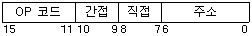
- 16개
- 32개
- 48개
- 64개
(정답률: 49%)
30. 다음 설명 중 옳은 것은?
- 마이크로 오퍼레이션을 동기 시키는 방법으로 동기 고정식과 동기 가변식이 있다.
- 동기 고정식은 CPU 시간의 효율적 이용은 가능하나 제어가 복잡하다.
- 동기 가변식은 CPU 시간의 낭비를 초래하지만 제어회로가 간단하다.
- 마이크로 사이클은 마이크로 오퍼레이션과 무관하다.
(정답률: 63%)
31. CPU의 제어장치 구성으로 적당한 것은?
- 누산기, 명령 해독기, 신호 발생기
- 명령 레지스터, 플래그 레지스터, 신호 발생기
- 명령 레지스터, 명령 해독기, 인터페이스기
- 명령 레지스터, 명령 해독기, 신호 발생기
(정답률: 61%)
32. 레지스터에 저장되어 있는 몇 개의 비트를 반전하기 위하여 그 장소에 x를 가진 데이터를 y 연산하면 된다. 이 때 x와 y는?
- x = 1, y = EX-OR
- x = 0, y = OR
- x = 1, y = AND
- x = 0, y = AND
(정답률: 62%)
33. 논리식
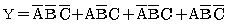
를 간략화 하면?- Y=A+B
- Y = B'
- Y= A+B+C
- Y=AB
(정답률: 63%)
34. 자료를 읽은 후 기억된 자료가 지워지는 파괴 메모리(DRO Memory : Destructive Read Out Memory)는 자료를 읽은 후 어떤 작업을 필요로 하는가?
- 재충전(Refresh)
- 재저장(Restoration)
- 클리어(Clear)
- 수정(Modify)
(정답률: 45%)
35. 다음 중 실린더(cylinder)와 관련이 있는 것은?
- Magnetic Disk
- Magnetic Tape
- Paper Tape
- Magnetic Core
(정답률: 58%)
36. DAM(Direct Access Method)으로 사용하지 않는 장치는?
- Magnetic Tape
- Data Cell
- Magnetic Drum
- Magnetic Disk
(정답률: 56%)
37. 상대 주소 지정 방식(relative addressing mode)에 가장 많이 쓰이는 명령어는?
- 분기 명령어
- 전달 명령어
- 감산 명령어
- 입출력 명령어
(정답률: 48%)
38. 컴퓨터 연산에 대한 설명 중 옳지 않은 것은?
- 한 번에 3개 이상의 데이터를 단일 연산기로 동시에 처리할 수 있다.
- 연산에 사용되는 데이터의 수가 한 개뿐인 것을 단항(unary)연산이라 한다.
- 중앙처리장치(CPU)에서 연산에 사용될 데이터를 기억시켜 두는 장소를 레지스터라 한다.
- 이동(move)과 회전(rotate)은 비수치적 연산에 속한다.
(정답률: 65%)
39. 10진수 -6의 2의 보수 표현으로 옳은 것은?
- 11111110
- 11111010
- 11111011
- 11111100
(정답률: 62%)
40. 다음 표에서 함수연산기능의 명령어를 수행하는 컴퓨터 구조와 피 연산자의 기억장소가 옳게 연결된 것은?
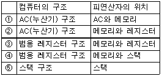
- ①, ②, ③
- ①, ③, ⑤
- ②, ③, ④
- ③, ④, ⑤
(정답률: 68%)
3과목: 시스템분석설계
41. 입력 설계 단계 중 현장에서 발생한 정보를 언제, 어디서, 누가, 무슨 용도로 사용 하는가 육하원칙에 따라 각 항목별로 명확하게 조사하는 단계는?
- 입력정보 수집 설계
- 입력정보 투입 설계
- 입력정보 발생 설계
- 입력정보 내용 설계
(정답률: 44%)
42. 시스템 문서화의 목적으로 가장 거리가 먼 것은?
- 개발자 등 관련자간의 의사소통 도구로 이용된다.
- 정보의 축적수단으로 이용된다.
- 신입 및 이동직원을 위한 교육 자료로 활용이 가능하다.
- 에러 발생시 책임 구분을 명확히 할 수 있다.
(정답률: 71%)
43. 코드의 사용 목적 중 적은 자릿수로 많은 항목을 표현하는 것은?
- 확장성
- 표의성
- 관리성
- 함축성
(정답률: 65%)
44. 시스템의 특성 중 조건이나 상황 변화의 경우 대응하는 절차나 행동을 그때마다 판단하거나 합의하여 결정하는 것이 아니고, 가장 적절한 처리가 조건이나 상황에 대응하여 이루어지도록 시스템을 설정해 주는 것은?
- 목적성
- 제어성
- 자동성
- 종합성
(정답률: 53%)
45. 코드 설계 순서로 옳은 것은?
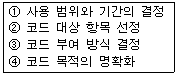
- ④→①→②→③
- ①→②→④→③
- ④→②→①→③
- ②→④→①→③
(정답률: 54%)
46. 표준 처리 패턴 중 파일 내의 데이터와 대조 파일에 있는 데이터 중 동일한 것들만 골라서 파일을 만드는 것은?
- merge
- collate
- extract
- distribution
(정답률: 52%)
47. 객체 지향의 개념 중 공통 성질을 가지고 있는 객체들을 분류하여 클래스를 생성하는 작업을 의미하는 것은?
- abstraction
- method
- inheritance
- instance
(정답률: 38%)
48. 자료 흐름도의 구성 요소 중 다음 설명에 해당하는 것은?
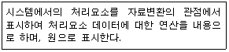
- data flow
- process
- terminator
- data store
(정답률: 56%)
49. 폭포수 모형에 대한 설명으로 옳지 않은 것은?
- 단계별 정의가 분명하고 전체 공조의 이해가 용이하다.
- 두 개 이상의 과정이 병행하여 수행되지 않는다.
- 실제 개발될 소프트웨어에 대한 시제품을 만들어 최종 결과물을 예측한다.
- 전통적인 생명주기 모형이다.
(정답률: 68%)
50. 통계 처리나 파일의 자료에 잘못이 발생하였을 때 파일을 원상 복구하기 위해 사용되는 파일로서, 현재까지 변화된 정보를 포함하는 것으로 기록 파일이라고도 하는 것은?
- 마스터 파일(master file)
- 히스토리 파일(history file)
- 집계 파일(summary file)
- 트레일러 파일(trailer file)
(정답률: 78%)
51. 시스템 출력 설계에서 종이에 출력하는 대신 출력정보를 마이크로필름에 수록하는 방식은?
- CRT 출력 시스템
- X-Y 플로터 시스템
- 음성 출력 시스템
- COM 시스템
(정답률: 66%)
52. 체크 시스템 중 대차대조표에서 대변과 차변의 합계를 비교, 체크하는 것과 같이 입력 정보의 여러 데이터가 특정 항목 합계 값과 같다는 사실을 알고 있을 때 컴퓨터를 이용해서 계산한 결과와 분명히 같은지를 체크하는 방법은?
- Matching Check
- Format Check
- Balance Check
- Check Digit Check
(정답률: 64%)
53. 파일 편성 방법 중 다음 설명에 해당하는 것은?
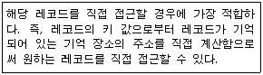
- Sequential 편성
- Indexed sequential 편성
- List 편성
- Random 편성
(정답률: 43%)
54. 프로세스를 설계하기 전 기본확인 사항으로 거리가 먼 것은?
- 최종사용자의 요구사항이 무엇인가를 확인한다.
- 정보의 발생장소와 발생시간을 확인한다.
- 처리해야 할 정보의 양과 발생빈도를 확인한다.
- 프로세스 흐름도를 작성한다.
(정답률: 45%)
55. 십진 분류 코드에 대한 설명으로 옳지 않은 것은?
- 대량의 자료에 대한 삽입 및 추가가 용이하다.
- 코드의 범위를 무한대로 확장 가능하다.
- 배열이나 집계가 용이하다.
- 기계 처리가 용이하다.
(정답률: 60%)
56. 한 모듈이 다른 모듈의 내부 기능 및 그 내부 자료를 조회하는 경우의 결합성은?
- stamp coupling
- common coupling
- content coupling
- control coupling
(정답률: 58%)
57. 출력 설계 단계 중 출력 항목 명칭, 출력 정보의 목적, 기밀성 유무와 보존, 이용자 및 이용 경로, 출력 정보의 이용 주기 및 시기 등을 검토하는 단계는?
- 출력 분배의 설계
- 출력 정보 내용의 설계
- 출력 매체의 설계
- 출력 이용의 설계
(정답률: 57%)
58. 시스템의 기본 요소 중 입력된 자료를 가지고 결과를 얻기 위하여 변환, 가공하는 행위를 의미하는 것은?
- feedback
- control
- process
- output
(정답률: 55%)
59. 모듈화의 특징으로 옳지 않는 것은?
- 모듈은 상속하여 사용할 수 없다.
- 모듈의 이름으로 호출하여 다수가 이용할 수 있다.
- 매개 변수로 값을 전달하여 사용 가능하다.
- 모듈은 분담하여 독립적으로 작성할 수 있다.
(정답률: 65%)
60. 파일 설계 단계 중 항목의 이름, 항목의 배열순서, 항목의 자릿수, 문자의 구분, 레코드 길이의 가변성 여부, 전송 블록 길이 등을 검토하는 단계는?
- 파일 매체의 검토
- 파일 편성법의 검토
- 파일 특성 조사
- 파일 항목의 검토
(정답률: 58%)
4과목: 운영체제
61. 페이징 기법에 대한 설명으로 옳지 않은 것은?
- 다양한 크기의 논리적인 단위로 프로그램을 나눈 후 주 기억장치에 적재시켜 실행시킨다.
- 주소 변환을 위해서 페이지의 위치 정보를 가지고 있는 페이지 맵 테이블이 필요하다.
- 주기억장치의 이용률과 다중 프로그래밍의 효율을 높일 수 있다.
- 가상기억장치 구현 기법으로 사용된다.
(정답률: 42%)
62. 다음 설명이 의미하는 것은?
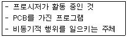
- 모니터
- 프로세스
- 세마포어
- 위킹셋
(정답률: 77%)
63. 운영체제의 기능으로 거리가 먼 것은?
- 사용자 인터페이스 제공
- 자원 스케줄링
- 데이터의 공유
- 원시 프로그램을 목적 프로그램으로 변환
(정답률: 75%)
64. 교착상태 발생의 필요충분조건이 아닌 것은?
- mutual exclusion
- hold and wait
- preemption
- circular wait
(정답률: 68%)
65. 디스크에서 헤드가 70트랙을 처리하고 60트랙으로 이동해 왔다. 디스크 스케줄링 기법으로 SCAN 방식을 사용할 때 다음 디스크 대기 큐에서 가장 먼저 처리되는 트랙은?
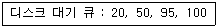
- 20
- 50
- 95
- 100
(정답률: 72%)
66. 자원 보호 기법 중 접근 제어 행렬에서 수평으로 있는 각 행들만을 따온 것으로서 각 영역에 대한 권한은 객체와 그 객체에 허용된 연산자로 구성되는 것은?
- Global Table
- Access Control List
- Capability List
- Lock/Key
(정답률: 51%)
67. 파일의 특성을 결정하는 기준 중 파일에 자료를 추가하거나 파일로부터 제거하는 작업의 빈도수를 의미하는 것은?
- activity
- volatility
- size
- access
(정답률: 45%)
68. UNIX에서 커널의 기능이 아닌 것은?
- 프로세스 관리 기능
- 기억장치 관리 기능
- 입/출력 관리 기능
- 명령어 해독 기능
(정답률: 68%)
69. 5K의 작업을 6K 공백의 작업공간에 할당했을 경우 사용된 기억장치 배치전략 기법은?
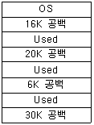
- First -Fit
- Best-Fit
- Worst-Fit
- Last-Fit
(정답률: 77%)
70. 대기 시간 5, 서비스 시간 5 일 때, HRN 스케줄링 기법을 사용했을 경우 우선순위 계산 결과는?
- 25
- 10
- 2
- 1
(정답률: 69%)
71. 분산처리 운영체제 시스템의 구조 중 성형구조에 대한 설명으로 옳지 않은 것은?
- 자체가 단순하고 제어가 집중되어 모든 작동이 중앙 컴퓨터에 의해 감시되므로 하나의 제어기로 조절이 가능하다.
- 집중제어로 보수와 관리가 용이하다.
- 중앙 컴퓨터 고장시 전체 네트워크에는 영향을 주지 않는다.
- 중앙 노드를 제외한 노드의 고장은 다른 노드에 영향을 주지 않는다.
(정답률: 72%)
72. Round-Robin 스케줄링(Scheduling) 방식에 대한 설명으로 옳지 않는 것은?
- 할당된 시간(Time Slice) 내에 작업이 끝나지 않으면 대기 큐의 맨 뒤로 그 작업을 배치한다.
- 시간 할당량이 작아질수록 문맥교환 과부하는 상대적으로 낮아진다.
- 시간 할당량이 충분히 크면 FIFO 방식과 비슷하다.
- 적절한 응답시간이 보장되므로 시분할 시스템에 유용한다.
(정답률: 64%)
73. UNIX에 대한 설명으로 옳지 않은 것은?
- 다양한 유틸리티 프로그램들이 존재한다.
- 멀티유저, 멀티태스킹을 지원한다.
- 2단계 디렉토리 구조의 파일 시스템을 갖는다.
- 대화식 운영체제이다.
(정답률: 66%)
74. “Working Set"의 설명으로 옳은 것은?
- 단위 시간 동안 처리된 작업의 집합
- 하나의 일(Job)을 구성하는 페이지의 집합
- 오류 데이터가 포함되어 있는 페이지의 집합
- 하나의 프로세스가 자주 참조하는 페이지의 집합
(정답률: 65%)
75. SJF(Shortest Job First) 스케줄링에서 작업 도착 시간과 CPU 사용시간은 다음 표와 같다. 모든 작업들의 평균 대기시간은 얼마인가?
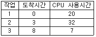
- 15
- 12
- 9
- 6
(정답률: 64%)
76. 3 페이지가 들어갈 수 있는 기억장치에서 다음과 같은 순서로 페이지가 참조될 때 FIFO 기법을 사용하면 페이지 부재(page fault)는 몇 번 일어나는가? (단, 현재 기억장치는 모두 비어 있다고 가정한다.)
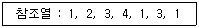
- 4
- 5
- 6
- 8
(정답률: 61%)
77. 운영체제의 목적 중 다음 사항과 가장 관계되는 것은?
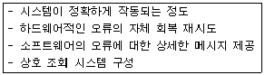
- 처리 능력 증대
- 응답 시간 단축
- 신뢰도 향상
- 사용 가능도 증대
(정답률: 70%)
78. 병렬처리의 주종(Master/Slave)시스템에 대한 설명으로 옳지 않은 것은?
- 주프로세서는 입출력과 연산을 수행한다.
- 종프로세서는 입출력 발생시 주프로세서에게 서비스를 요청한다.
- 종프로세서가 운영체제를 수행한다.
- 비대칭 구조를 갖는다.
(정답률: 69%)
79. 다음은 무엇을 구현하기 위한 방법인가?
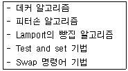
- 세마포어
- 상호배제
- 모니터
- 페이지 교체
(정답률: 53%)
80. 디렉토리 구조 중 마스터 파일 디렉토리는 사용자 파일 디렉토리를 관리하고, 사용자 파일 디렉토리는 사용자별 파일을 관리하는 것은?
- 1단계 디렉토리 구조
- 2단계 디렉토리 구조
- 트리 디렉토리 구조
- 비순환 그래프 디렉토리 구조
(정답률: 59%)
5과목: 정보통신개론
81. 멀티미디어 표준화방식에서 동화상 압축 표준화에 해당되는 것은?
- JPEG
- MPEG
- MP3
- HTTP
(정답률: 71%)
82. 다음 중 계층화 구조의 기본 구성 요소에 해당되지 않는 것은?
- 개체(Entity)
- 데이터 단위(Data Unit)
- 접속(Connection)
- 주소(Address)
(정답률: 34%)
83. 비패킷형 단말이 패킷교환망을 이용할 수 있도록 패킷을 조립, 분해하는 기능을 가진 장치는?
- DSU
- MODEM
- PAD
- CCU
(정답률: 56%)
84. 다음 중 비동기식 전송시 포함되는 내용이 아닌 것은?
- 시작 비트
- 데이터
- 플래그 비트
- 정지 비트
(정답률: 54%)
85. 다음 중 광통신 시스템에서 광 검출기로 적합한 것은?
- LD(Laser Diode)
- LED(Light Emitting Diode)
- ZD(Zener Diode)
- APD(Avalanche Photo Diode)
(정답률: 39%)
86. 다음 중 전송 오류 검출 방식이 아닌 것은?
- 패리티(parity) 검사
- 블록합검사(block sum check)
- 순환잉여검사(CRC)
- 바이폴라(bipolar) 검사
(정답률: 66%)
87. 다음 중 패킷 교환방식의 장점이 아닌 것은?
- 송ㆍ수신 간에 이용되는 단말기의 속도나 프로토콜이 서로 상이하여도 통신이 가능하다.
- 전송데이터의 패킷에는 목적지의 주소, 제어정보 등의 추가로 인한 오버헤드가 존재한다.
- 디지털전송에 이용되기 때문에 전송품질과 신뢰도가 우수하다.
- 중계회선을 서로 다른 이용자가 공동으로 사용할 수 있어 회선 사용률이 좋다.
(정답률: 46%)
88. 다음 중 데이터링크 계층에서 손상된 프레임의 재전송을 요구하는 자동반복 요청의 기능은?
- 흐름제어
- 전송에러제어
- 링크제어
- 회선제어
(정답률: 60%)
89. OSI-7 참조모델 계층 중 종점간(End-to-End)에 신뢰성 있는 데이터 전송을 제공하고, 다중화의 기능을 수행하는 계층은?
- 데이터링크 계층(Data link Layer)
- 네트워크 계층(Network Layer)
- 트랜스포트 계층(Transport Layer)
- 세션 계층(Session Layer)
(정답률: 50%)
90. 8위상변조와 2진폭변조를 혼합하여 변조속도가 1200[baud]인 경우 전송속도[bps]는?
- 1200
- 2400
- 3600
- 4800
(정답률: 45%)
91. 다음 중 베이스밴드 LAN에 대한 설명으로 옳은 것은?
- 높은 반송파를 통해서 데이터, 영상, 음성 등의 전송이 이루어진다.
- 디지털 신호정보를 직접 전송하는 방식이다.
- 통신경로를 여러 개의 주파수대역으로 나누어 쓰는 방식이다.
- 기본적으로 주파수 분할 다중화방식을 이용한다.
(정답률: 37%)
92. 아날로그컬러TV 방송방식에 대한 국제표준규격이 아닌 것은?
- SECAM
- NTSC
- PAL
- ATSC
(정답률: 28%)
93. OSI-7 참조모델 계층에서 제4~6계층의 순서가 차례대로 옳은 것은?
- 트랜스포트계층 → 세션계층 → 프레젠테이션계층
- 세션계층 → 네트워크계층 → 응용계층
- 네트워크계층 → 트랜스포트계층 → 세션계층
- 프레젠테이션계층 → 응용계층 → 세션계층
(정답률: 64%)
94. 다중화 방식 중 실제로 전송할 데이터가 있는 단말장치에만 타임 슬롯을 할당함으로써 전송 효율을 높일 수 있는 것은?
- 동기식 TDM
- FDM
- 비동기식 TDM
- CDM
(정답률: 47%)
95. 다음 중 위성 통신의 다원접속 방법이 아닌 것은?
- 신호분할 다원접속
- 주파수분할 다원접속
- 시분할 다원접속
- 코드분할 다원접속
(정답률: 36%)
96. 다음 중 OSI-7 참조모델의 네트워크 계층까지의 기능을 수행하는 것은?
- 아답터
- 브리지
- 라우터
- 리피터
(정답률: 63%)
97. 다음 중 주파수분할 다중화(FDM)에 대한 설명으로 옳은 것은?
- 채널간의 완충지역으로 가드밴드가 있어 채널의 증가 효과가 있다.
- 대역확산방식을 이용한 다중화 방식이다.
- 각 채널에 고정된 time slot을 할당하는 방식이다.
- TV방송이나 CATV 등에 사용되며, 전송로의 대역폭을 여러 개의 작은 대역으로 나누어 쓰는 기법이다.
(정답률: 50%)
98. 반송파로 사용되는 정현파의 위상에 정보를 실어 보내는 변조방식은?
- ASK
- DM
- PSK
- ADPCM
(정답률: 59%)
99. 원거리에서 전기나 수도, 가스 등의 사용량을 원격 검침하는 시스템은?
- TMS(Tele-Metering System)
- ARS(Automatic Response System)
- CTS(Computerized Typesetting System)
- POS(Point of sales System)
(정답률: 46%)
100. 통신회선의 채널용량을 증가시키기 위한 방법으로 적합하지 않은 것은?
- 신호 세력을 높인다.
- 잡음 세력을 줄인다.
- 데이터 오류를 줄인다.
- 채널대역폭을 증가시킨다.
(정답률: 53%)
분산 데이터베이스는 여러 대의 컴퓨터에 데이터를 분산하여 저장하고 처리하는 시스템입니다. 이러한 시스템은 데이터의 일관성 유지, 분산제어, 보안 등 다양한 문제를 해결해야 하기 때문에 데이터베이스의 설계가 복잡해집니다. 따라서 "데이터베이스의 설계가 쉽다."는 옳지 않은 설명입니다.
분산 데이터베이스의 장점으로는 분산제어가 가능하다는 점, 시스템 성능이 향상된다는 점, 시스템의 융통성이 증가한다는 점 등이 있습니다.